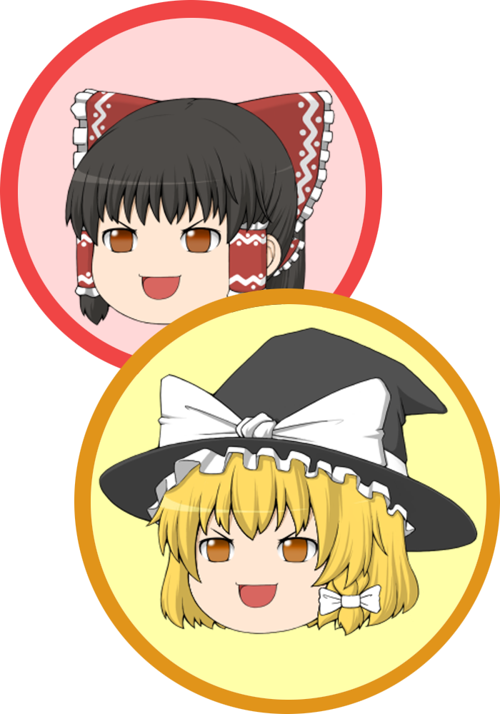
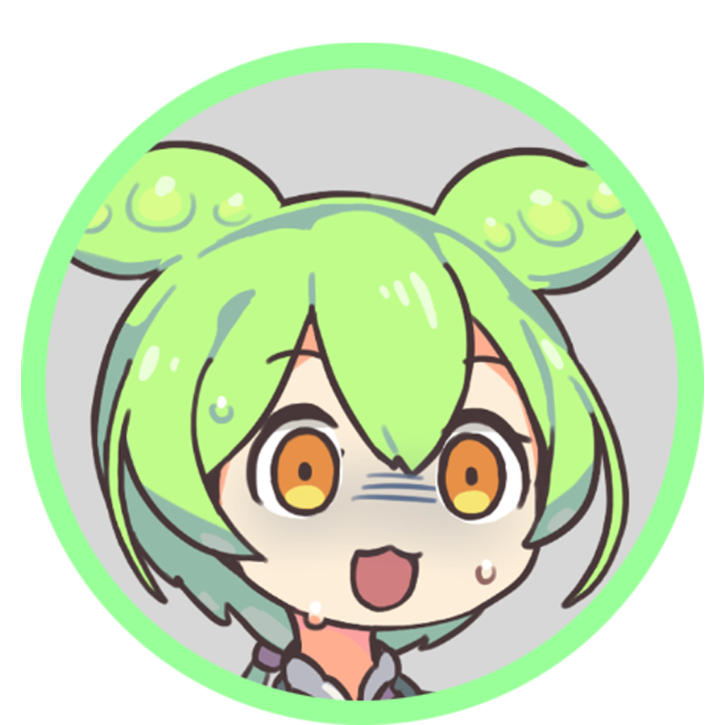
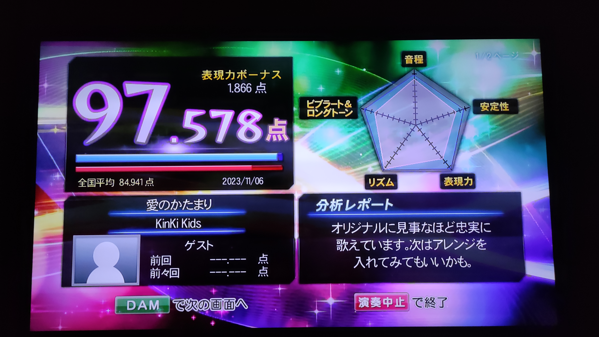

好きなこと① ゲーム


奥崎恭平さんの一番の趣味は、何と言ってもゲームなのだ！
特にレースゲームやFPS、バイオハザードシリーズがお気に入りなのだ。
最新のゲームから古のゲームまで幅広く愛す、生粋のオールラウンダーなのだ！
特にレースゲームやFPS、バイオハザードシリーズがお気に入りなのだ。
最新のゲームから古のゲームまで幅広く愛す、生粋のオールラウンダーなのだ！
好きなこと② 釣り


アウトドアで唯一とも言える趣味が釣りなのだ。
潮風に吹かれながら俗世に疲れた心を癒やし、突如として起こる大物との命の駆け引きはたまらないのだ！
・・・初期投資も継続投資もそこそこ高くついてしまうところが、タマにキズなのだ。
潮風に吹かれながら俗世に疲れた心を癒やし、突如として起こる大物との命の駆け引きはたまらないのだ！
・・・初期投資も継続投資もそこそこ高くついてしまうところが、タマにキズなのだ。
好きなこと③ ピアノ演奏
最も文芸的で見てくれが良い趣味がピアノ演奏なのだ。
小学生で一度辞めたものの成人後にまた触りだし、おこがましくもバッハなんかを弾いてるみたいなのだ。
音楽で食っていく道を一度は夢見るものなのだ！
小学生で一度辞めたものの成人後にまた触りだし、おこがましくもバッハなんかを弾いてるみたいなのだ。
音楽で食っていく道を一度は夢見るものなのだ！
好きなこと④ 制作活動

パソコンを使って画像や動画の編集をすることが好きで、以前はゆっくり解説動画などを投稿していたのだ。
しばらくご無沙汰のようだが、復活の日も近いのか？
それにしても、このボクを差し置いてゆっくり解説動画を作るなんて、とんだ失敬なのだ！
しばらくご無沙汰のようだが、復活の日も近いのか？
それにしても、このボクを差し置いてゆっくり解説動画を作るなんて、とんだ失敬なのだ！
合成音声動画のパイオニアは私達ゆっくりである。
あらゆるジャンルの実況・解説動画に私達が登場し、視聴者に有益をもたらしてきたのは周知の事実。
ぽっと出の新参者がたどり着ける境地ではない事は、歴史が証明している。
格が違うんだよ！ 格が！！

あらゆるジャンルの実況・解説動画に私達が登場し、視聴者に有益をもたらしてきたのは周知の事実。
ぽっと出の新参者がたどり着ける境地ではない事は、歴史が証明している。
格が違うんだよ！ 格が！！

なんて厚かましい奴らなのだ！
でも、胡座をかいていられるのも今のうちなのだ！
ボクの動画のシェアをもっと広げて、いつかあなた方をご退場に導いて差し上げるのだ！！
でも、胡座をかいていられるのも今のうちなのだ！
ボクの動画のシェアをもっと広げて、いつかあなた方をご退場に導いて差し上げるのだ！！
好きなこと⑤ カラオケ

カラオケは一人で行くくらい大好きなのだ！
採点での最高記録は、Kinki Kidsの「愛のかたまり」で97点台なのだ。
目指せ100点満点なのだ！！
採点での最高記録は、Kinki Kidsの「愛のかたまり」で97点台なのだ。
目指せ100点満点なのだ！！